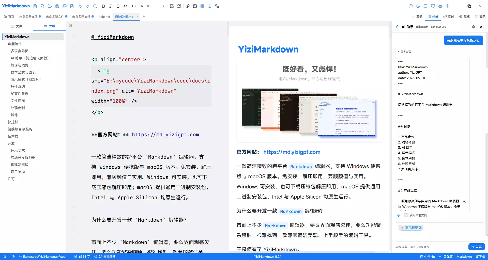

一款 AI 加持的跨平台 Markdown 编辑器
内置大模型助手与类 PPT 演示模式，写作、提炼、汇报一站搞定

源代码、并排、实时预览、纯预览、演示模式，随心切换，找到最适合你的写作与汇报节奏。
笔记一键变全屏幻灯片，纯 Markdown 自动版式，14 种排版自动匹配，Ctrl+Alt+P 即可汇报演示。
侧边聊天面板接入 19 家大模型，支持自定义服务、流式回复、思考过程展示，还能引用当前文档对话。
一键调用技能（演示稿提炼、文档摘要、润色改写），提示词自动注入；自定义技能放进 skills 目录即可扩展。
简繁中文、英日韩、德法西葡等 15 种语言即时切换，全界面文案、快捷键、插件说明同步国际化。
内置液态玻璃、黑客帝国、落日熔金、赛博朋克等15套精美主题，每套均支持亮暗双模式，支持自定义主题。
像浏览器一样管理多个文件，轻松在文档间切换，工作流不断不乱。
自动提取标题生成文档大纲，点击跳转，长文档也能快速定位。
Windows 便携免安装解压即用，macOS 原生通用二进制（Intel + Apple Silicon），换机也能无缝继续。
内置KaTeX插件，支持LaTeX行内公式与块级公式，满足学术写作需求。
内置Mermaid插件，支持流程图、时序图、甘特图等可视化图表渲染。
8×8网格表格插入表格，点击即可插入对应行列的Markdown表格，无需手动写语法。
无需导出、无需另装软件。Ctrl+Alt+P 进入全屏演示，纯 Markdown 用 --- 分页，引擎分析整页内容自动匹配版式，主题色与字体实时继承。
<!-- layout: quote --> 强制版式，<!-- align: center --> 指定对齐S 查看备注功能持续优化，你的建议是最好的迭代方向。
skills/ 目录承载技能清单与提示词，内置「演示稿提炼」「文档摘要」「润色改写」，技能标签插入输入框、提示词自动注入，用户可自由扩展--- 分页，引擎按内容结构自动选版式（封面/内容/图片/引用/代码/图表）Ctrl+Alt+P）--editor-h1/h2/h3 标题配色/ 或 、 自动唤起，继续输入任意字符自动关闭这是 macOS 安全机制（Gatekeeper）对未公证应用的正常拦截，不影响使用。YiziMarkdown 采用 ad-hoc 签名免费分发，首次打开请：在「访达」中按住 Control 点击（或触控板双指轻点）应用图标 → 选择「打开」→ 在弹出的对话框中再次点击「打开」，之后即可正常启动。也可以在终端执行 xattr -dr com.apple.quarantine /Applications/YiziMarkdown.app 一键解除隔离标记。
正常，这是 macOS 的安全机制。YiziMarkdown 的 AI 密钥通过系统钥匙串（Keychain）加密存储，绝不写入设置文件或上传网络。首次访问钥匙串时，macOS 会要求输入你的 Mac 登录密码（或使用 Touch ID）完成授权，点击「始终允许」后之后不再提示，密钥也依然只保存在本机钥匙串中。
软件本身免费开源。AI 聊天需要你在「设置 → AI」中配置模型服务商的 API 密钥（内置 OpenAI、Anthropic、DeepSeek、通义千问、智谱 GLM、Kimi、小米 MiMo、美团 LongCat 等 19 家，也支持自定义兼容服务），调用费用由对应服务商收取；若使用 Ollama 本地模型则完全免费、无需联网。
文档不会丢：你的内容以标准 .md 文件保存，放在任意位置，换机后用本软件或任何 Markdown 编辑器都能打开。AI 密钥存在本机系统钥匙串 / Windows 凭据管理器，不随软件迁移，换机后需在新机器上重新配置一次 API 密钥。
v0.2.3 起，技能文件从应用目录迁移至用户目录 ~/Documents/yizimarkdown/skills/，方便用户自定义且不会被版本更新覆盖。首次启动新版本时，内置技能会自动同步到用户目录，已有的自定义技能只要放在该目录下即可继续使用。AI 聊天面板底部的「管理技能」按钮可直接打开技能目录并查看定制指南。
打开 ~/Documents/yizimarkdown/skills/ 目录，参考 skill-guide.md 定制指南编写新的技能 JSON 文件。每个技能包含名称、摘要、提示词模板等字段，保存后重启软件即可在 AI 聊天面板的技能菜单中看到新技能。内置技能也会同步到此目录，你可以基于内置技能修改提示词来创建自己的版本。